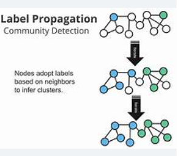

üîñ What is Label Propagation?
Label Propagation is a graph-based semi-supervised learning algorithm that spreads labels from a small set of labeled data points to a large set of unlabeled data points using the structure of the data.
It works by treating data as nodes in a graph, where edges represent similarities between points. Labels “propagate” through the graph iteratively until convergence.
üìö Detailed Concept
The algorithm constructs a graph with nodes representing samples and weighted edges representing similarities (e.g., distance or kernel functions). Initially, only a few nodes have known labels.
Label propagation iteratively updates the labels of unlabeled nodes based on their neighbors’ labels, smoothing the label information across the graph. Eventually, each node’s label stabilizes, effectively assigning labels to previously unlabeled data.
üß© Uses of Label Propagation
- Classifying data with very few labeled examples.
- Exploiting the data manifold or similarity structure in semi-supervised tasks.
- Clustering and community detection in graphs.
üöÄ Applications
- Social Networks: Detecting communities and spreading information.
- Image Segmentation: Propagating pixel labels in computer vision.
- Recommender Systems: Predicting preferences based on similarity graphs.
- Bioinformatics: Labeling gene expressions or protein functions.
üñºÔ∏è Visualization

Visualization of label propagation: labels spread iteratively from labeled nodes (colored) through the graph edges to unlabeled nodes.
✅ Advantages
- Simple and intuitive graph-based method.
- Effectively uses data similarity structure.
- Does not require complex models or heavy computation.
- Works well when data lies on low-dimensional manifolds.
⚠️ Limitations
- Performance depends heavily on the quality of the graph and similarity metric.
- Can propagate incorrect labels if initial labeled points are noisy or insufficient.
- Not scalable to extremely large datasets without optimization.